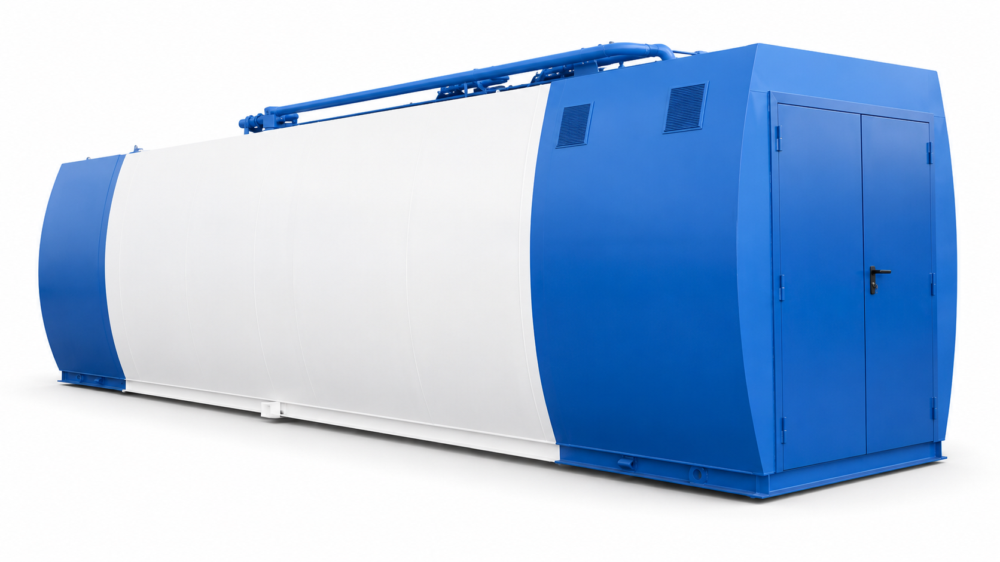
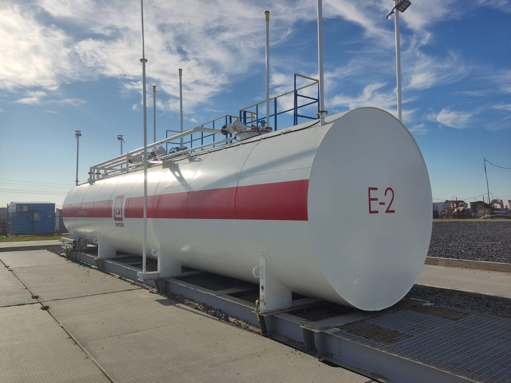
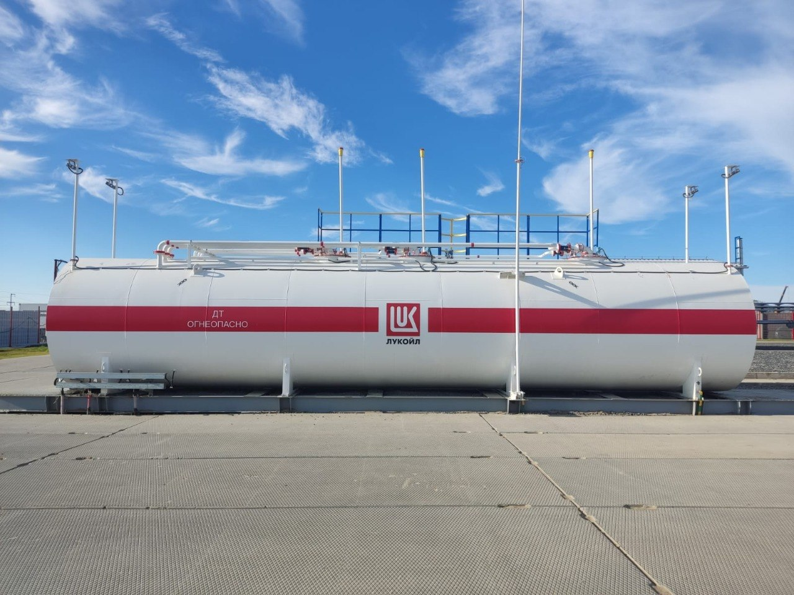
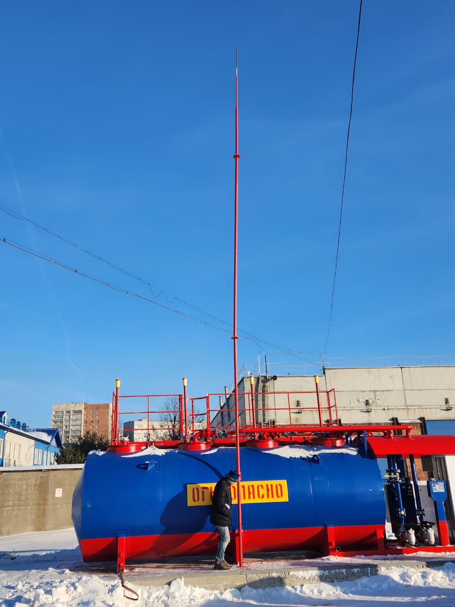
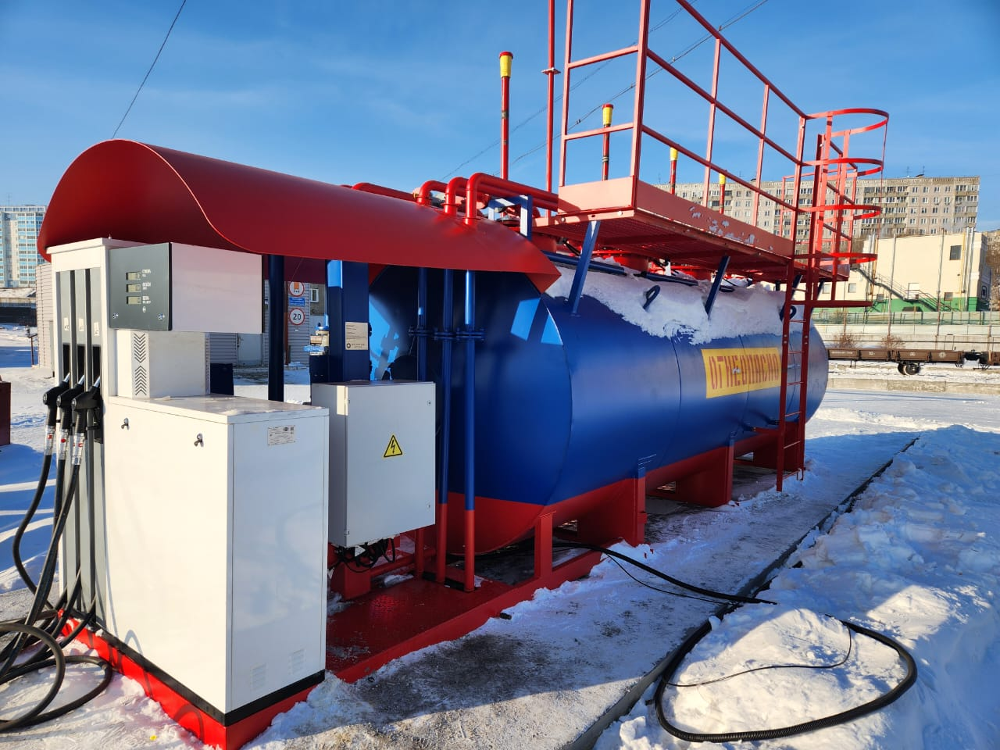
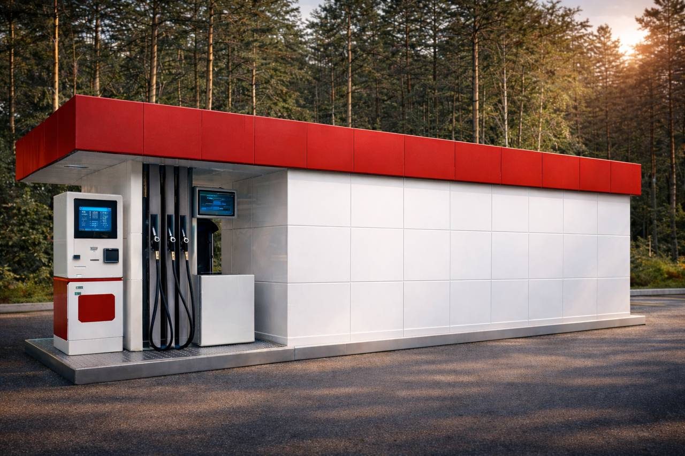
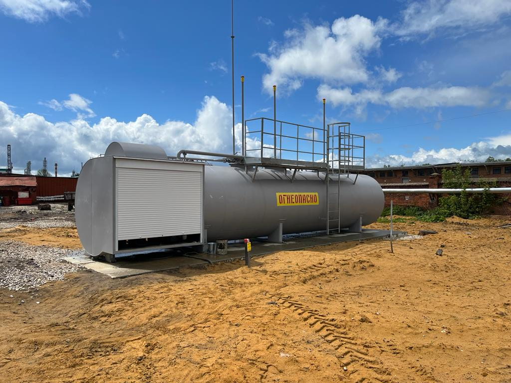
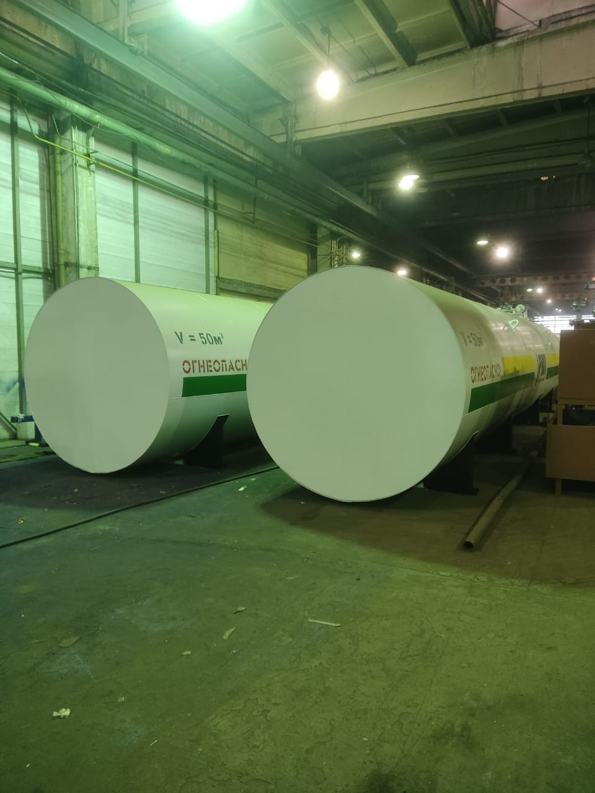

минимальный бюджет
Открытое, с козырьком
Резервуар на раме, оборудование под козырьком. Для закрытой охраняемой территории.
Ведомственная АЗС · ТЗП · для собственного автопарка
Заправляйте свою технику на своей территории, по своей цене и с точным учётом до литра. Изготавливаем контейнерные АЗС объёмом от 5 до 60 м³ и берём на себя всё: резервуар, колонку, автоматизацию, доставку и пусконаладку.

Цена зависит от объёма, числа секций и исполнения корпуса. Точный расчёт даём в течение рабочего дня по опросному листу.
Ведомственная контейнерная АЗС — это заправочная станция, которую предприятие ставит на своей территории и заправляет на ней только собственный транспорт. Топливо не продаётся сторонним водителям, поэтому не нужны касса, эквайринг и терминал самообслуживания, а значит станция обходится заметно дешевле коммерческой.
Конструктивно это одна рама, на которой смонтированы резервуар для хранения топлива, топливораздаточная колонка, насосное оборудование, трубная обвязка, уровнемер, датчики загазованности и межстенного пространства, манометры и электрощит. Всё привозится готовым: на площадке остаётся подключить питание и провести пусконаладку.
КАЗС, ТЗП, топливозаправочный пункт, топливный модуль, мини АЗС, минизаправка — на рынке это называют по-разному, но по действующей классификации СП 156 объект один: контейнерная автозаправочная станция.
Топливозаправочным пунктом её называют, когда она стоит внутри периметра предприятия и обслуживает только его технику. «Мини АЗС» и «минизаправка» — народные названия контейнерной АЗС малого объёма, 5–10 м³. Если топливораздаточная колонка вынесена от резервуара на 6–8 метров — это уже модульная АЗС, другая схема размещения. Разница важна не для красоты: от классификации зависят требования к размещению и допустимые объёмы.
| Как называют | Что имеют в виду | Как это по СП 156 |
|---|---|---|
| КАЗС | Станция в контейнере или на раме: резервуар и ТРК в одном изделии | Контейнерная автозаправочная станция |
| ТЗП, топливозаправочный пункт | Та же станция, но внутри периметра предприятия и только для своей техники | Контейнерная АЗС ведомственного назначения |
| Мини АЗС, минизаправка | Малый объём, 5–10 м³, один вид топлива, одна колонка | Контейнерная АЗС малого объёма |
| Топливный модуль | Резервуар с обвязкой и насосом, часто без учёта отпуска | Контейнерная АЗС либо склад ГСМ — зависит от комплектации |
| Модульная АЗС | Колонка вынесена от резервуара на 6–8 м, отдельная островная схема | Модульная АЗС — другие требования и объёмы до 60 м³ |
Шесть типовых ситуаций и то, что предприятия в них обычно берут. Комплектация подбирается по расходу, а не по отрасли.
| Кому | Задача | Что обычно берут |
|---|---|---|
| Автотранспортные предприятия и логистика | Парк от 10–20 машин, топливо на АЗС по рознице | КАЗС 20м3, 2 секции, карты водителей |
| Строительные организации | Заправка техники на объекте, слив с бензовоза | КАЗС 10м3 или 20 м³, открытое исполнение |
| Карьеры, добыча, лесозаготовка | Удалённая площадка, нет заправок рядом | КАЗС 30м3–40м3, дизель, повышенная производительность |
| Сельхозпредприятия | Сезонный пик расхода, хранение запаса | КАЗС 20м3–40м3, дизель, простая автоматика |
| Автобусные и коммунальные парки | Ночная заправка без оператора | Отпуск по картам, отчёты по каждой машине |
| Промышленные площадки | Спецтехника, погрузчики, ДГУ | КАЗС 10м3, минизаправка на одну колонку |
Наши станции работают у предприятий
Мы не публикуем усреднённых сроков окупаемости: они зависят от закупочной цены топлива в вашем регионе, объёма выборки и структуры парка, а цены на рынке меняются быстрее, чем живёт любая цифра на сайте. Считать нужно по вашим данным. Вот из чего складывается результат.
Топливо приобретается партией у поставщика, а не по розничной цене на АЗС. Разница на литре у каждого своя, но она есть всегда и умножается на годовой объём.
Это то, что вскрывается в первый же месяц после запуска учёта: расхождение между выданным по путевым листам и фактически залитым. Пока заправка идёт на стороне, проверить эту цифру нечем. После установки КАЗС с картами водителей она видна по каждой машине.
Поездка на АЗС и обратно — это оплаченное время водителя и неработающая машина. На удалённом объекте счёт идёт на часы, а не на минуты.
Свой запас в 20–40 м³ — это независимость от очередей, лимитов и локального дефицита в сезон.
Ведомственная КАЗС размещается на территории предприятия и подчиняется требованиям СП 156. Ключевое, что нужно знать заранее.
Объём КАЗС ограничен СП 156 и зависит от места установки. В черте населённого пункта одна секция резервуара — не более 10 м³, общий объём станции — не более 40 м³. За пределами населённого пункта секция может быть до 20 м³, а станция — до 60 м³. Поэтому КАЗС 40м3 в городе делается как четыре секции по 10 м³, и это не удорожает эксплуатацию: в четырёх секциях может храниться один и тот же вид топлива.

Базовый вариант и то, что чаще всего ищут как «мини АЗС» или «минизаправка». Хватает парку до 10–15 единиц техники либо как буферный запас на объекте. Одна секция, один вид топлива, однорукавная колонка. Самое дешёвое исполнение — открытое, с козырьком.

Самый ходовой объём для ведомственной заправки. Обычно делается двухсекционным — 10 + 10 м³. Две секции дают запас на месяц-полтора и позволяют либо держать два вида топлива, либо вырабатывать секции по очереди, не останавливая заправку на время слива бензовоза.

Решение для площадок с большим расходом и редким подвозом: три секции по 10 м³. Позволяет принять сразу целую автоцистерну и держать одновременно дизель и бензин.

Максимальный объём контейнерной АЗС в черте населённого пункта — четыре секции по 10 м³. Ставится на карьерах, в крупных автопарках и на удалённых объектах, куда топливо возят раз в месяц. Если нужен объём больше, переходим на модульную АЗС до 60 м³.
Исполнение корпуса — это только внешний вид и защищённость оборудования. Внутри любой КАЗС одна и та же станция: резервуар, колонка, насосы, обвязка, уровнемер. Ни один из вариантов не заправляет быстрее и не служит дольше. Для ведомственных станций дорогие облицовки — металлокассеты и композитные панели — обычно не берут: они нужны там, где заправку видит клиент.
Резервуар на раме, оборудование под козырьком. Для закрытой охраняемой территории.

Корпус продлён, техотсек закрыт дверью на замок — защита от посторонних и от погоды.

Обшивка листовым металлом 3 мм, скруглённые борта, надёжные двери и замки.

Каркас вокруг станции, обшивка профлистом. Дополнительная защита оборудования.

Резервуар монтируется внутрь готового контейнера — привычный для промплощадки вид.
Это то, чем ведомственная КАЗС отличается от коммерческой, и то, ради чего её обычно ставят. Отпуск топлива организуется тремя способами.
Рекомендуемый вариант. Каждому водителю выдаётся карта, система знает, кто, когда, сколько и в какую машину залил, и может ограничить суточный или месячный лимит. Заправка работает круглосуточно и без оператора.
Сотрудник вручную разрешает налив и фиксирует операции. Подходит там, где заправка идёт в одну смену.
Отпуск по кнопке на колонке — когда учёт ведётся вручную, по журналу и путевым листам.
От простого автономного налива с картами, где контроллер стоит прямо в колонке, до полноценной системы ведомственного учёта с рабочим местом, отчётами и выгрузкой данных в 1С, SAP или другую учётную систему предприятия.
Уровнемер показывает остаток, объём, температуру и плотность топлива, данные можно передавать на компьютер или по GSM.
Из чего состоит контейнерная АЗС и что именно обеспечивает безопасность хранения и отпуска топлива.


Границы ответственности фиксируются в договоре до начала изготовления, чтобы на площадке не выяснилось, что кабель тянуть некому.
Гарантия 12 месяцев. С сервисным контрактом — 36 месяцев и плановое обслуживание: вы не занимаетесь заправкой, вы ей пользуетесь.
На станцию и смонтированное оборудование, с даты ввода в эксплуатацию.
Плановое обслуживание, выезды по заявке, замена расходников и узлов, поддержка по автоматизации и учёту — на нас. Три года станция просто работает.
Или короткий разговор: объём, число секций, виды топлива, где ставится (город или вне населённого пункта), нужен ли учёт по картам.
Коммерческое предложение с составом оборудования — в течение рабочего дня.
Контроль на всех этапах, фотоотчёт с производства, испытания и приёмка.
Доставка, пусконаладка, обучение персонала, передача документов, сервис.
Реальные фотографии станций: площадки заказчиков, зимняя эксплуатация и цех завода-производителя.














Скажите объём, количество видов топлива и где будет стоять станция — остальное подберём сами. Расчёт бесплатный, ни к чему не обязывает.